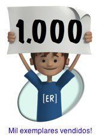
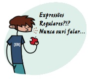
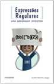
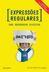

AVISO: Há uma edição mais recente deste livro.
|
ESGOTADO!
Veja a edição mais recente |
Ficha
| Título: | Expressões Regulares - Uma abordagem divertida |
| Autor: | Aurelio Marinho Jargas (site, blog, twitter) |
| Editora: | Novatec |
| Edição: | 2ª |
| Ano: | 2008 |
| Páginas: | 168 |
| Formato: | 16×23 cm |
| Peso: | 260 gramas |
| Encadernação: | brochura |
| Idioma: | Português |
| Lançamento: | 15 de agosto de 2008 (anúncio do autor) |
| ISBN: | 978-85-7522-173-0 |
| Preço: | R$ 37,00 |
Conquistas
|  |
Resenha

As Expressões Regulares podem ser utilizadas em diversos aplicativos, como editores de textos, leitores de e-mail e linguagens de programação, no UNIX, Linux, Windows e Mac. Qualquer usuário de computador pode usufruir dos seus benefícios. Profissionais que manipulam texto e dados economizarão horas de serviço braçal: escritores, revisores, tradutores, programadores e administradores de sistema.
Em uma abordagem incomum de encontrar em livros técnicos, as explicações didáticas e divertidas tornam prazerosa a leitura de um tema tão árido e abstrato. É uma conversa entre amigos, partindo do básico até chegar aos conceitos avançados. Esta obra revela aos poucos o poder das expressões, o leitor irá saborear o tema descobrindo seus segredos descontraidamente.
Esta 2ª edição foi publicada em um formato maior, de 16x23 cm e são 24 páginas a mais, com conteúdos novos. O capítulo das linguagens de programação foi reescrito, agora sendo uma fonte completa de referência, com vários exemplos de uso das expressões para casar e substituir textos. Também há tópicos novos: ActionScript, Grep/Egrep/Fgrep, PHP (PCRE), Shell Script (Bash). Há um capítulo novo sobre bancos de dados, ensinando a usar as expressões no MySQL e no PostgreSQL.
Quais as diferenças para a 1ª edição?
|  |  | |
| 1ª Edição | 2ª Edição | |
|---|---|---|
| Ano: | 2006 | 2008 |
| ISBN: | 85-7522-100-0 | 978-85-7522-173-0 |
| Páginas: | 144 | 168 |
| Formato: | 14×21 cm | 16×23 cm |
- Tópicos novos
-
- ActionScript
- Grep / Egrep / Fgrep
- MySQL
- PHP (PCRE)
- PostgreSQL
- Shell Script (Bash)
- Tópicos reescritos
-
- Awk
- Javascript
- Perl
- PHP
- Python
- Ruby
- Sed
- Tcl
- Mais conforto
- O formato do livro foi aumentado para 16x23cm. Com mais espaço para o texto, a diagramação ficou mais solta, proporcionando maior conforto na leitura.
- Mais conteúdo
- Com o número total de páginas aumentando de 144 para 168, são 24 páginas a mais, com muito conteúdo novo. Se levar em conta que o formato anterior era menor (14x21cm), esse aumento no número de páginas fica ainda maior.
- Conteúdo atualizado
- Todo o livro foi lido e relido. Várias vezes. E de novo. Além das erratas da 1ª edição, vários outros trechos foram corrigidos e atualizados. Endereços de Internet, listas de discussão e outras referências externas também foram verificadas e atualizadas.
- Capítulo reescrito: Linguagens de programação
- Na primeira edição, o capítulo de linguagens de programação dava apenas uma visão geral da aplicação das expressões nas mais diversas linguagens, com poucos exemplos. Este capítulo foi reescrito (exceto os tópicos C, Java e VBscript), agora servindo de referência completa de como casar e substituir textos em cada linguagem, com muitos exemplos. Para cada item explicado, há um exemplo funcional que o leitor pode testar em sua máquina, enquanto lê. Comprove a diferença (leia as anotações nos PDFs):
| Tópico Awk na 1ª edição | → | Tópico Awk na 2ª edição |
- Capítulo novo: Banco de Dados
- Há um capítulo novo, dedicado à aplicação das expressões regulares nos seguintes bancos de dados: MySQL e PostgreSQL. Seguindo o mesmo formato didático e recheado de exemplos das linguagens de programação, durante a leitura você já poderá testar os conceitos.
- Maior participação do piá
- Você pediu e agora o piá aparece ainda mais no livro, marcando a abertura de cada capítulo.
- Tirinha do Nerdson
- Em algum lugar no meio do livro, quando você menos esperar, vai ter o prazer de ler uma divertida tirinha do Nerdson!
- Capa nova
- Amarelão vibrante berrante, que diz: Me leva! Me leva! :)
Comprar
Você é colecionador e quer comprar essa edição antiga do livro?
Essa edição está esgotada, porém, às vezes, algumas livrarias ainda possuem um último exemplar em estoque. Veja se aparece alguma oferta nestes sites: BuscaPé, JáCotei.
Dica: Para evitar transtornos, entre em contato com a livraria e pergunte se o livro realmente existe no estoque deles.
Se você procura a edição mais recente desse livro, clique aqui.
« Voltar para a página principal